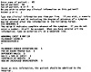
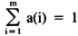

by Abraham Kandel
CRC Press, CRC Press LLC
ISBN: 084934297x Pub Date: 11/01/91
|
|
Fuzzy Expert Systems
by Abraham Kandel CRC Press, CRC Press LLC ISBN: 084934297x Pub Date: 11/01/91 |
| Previous | Table of Contents | Next |
The EMERGE system was designed with two user interfaces: a question mode, in which the system answered questions with y, n, or ? and a data-driven mode, in which the user enters information. These two modes are illustrated in Figures 2 and 3. The data-driven mode incorporates an algorithm for inexact word and phrase matching to permit acceptance of altered word order and minor misspellings. Note the altered word order of “Abnormal Chest X-ray” in Figure 3 as compared to the question mode in Figure 2. As the system developed, a third menu-driven mode was developed. This interface was, in fact, developed during prospective analysis of the system at the request of the end users, who had become familiar with user-oriented microcomputer programs. Some sample menus are shown in Figure 4. These two menus contain the information addressed in the level control flow. In all of the previous user interfaces, however, the symptoms were considered to be either present or absent. A third alternative was possible on the question mode. If the user had no information, a question mark could be entered. The question mark was treated as a “no” in the inference rules, but was treated differently in the certainty factor computation.
Figure 2 Question mode of user interface.
Figure 3 Data-driven mode of user interface.
Difficulties arose in the preceding scheme in that the user had to make a yes/no decision about each test result, thus resulting in loss of information regarding severity of the symptoms. It was, in fact, discovered that the standard procedure for residents doing a physical examination was to enter a number between 0 and 10, inclusive, which indicated severity of the symptom. It was decided to adopt this procedure. A sample consultation using this new version is shown in Figure 5. The values entered are then divided by 10 to give a value between 0 and 1, inclusive. All values are given as positive symptoms. If a negation occurs in a production rule, the value is subtracted from 1. Similarly, in the data-driven mode, a numerical value can be entered after each clinical finding, as shown in Figure 6. If the number is omitted, a “yes,” which is equivalent to a value of 10, is assumed. In the menu mode the number of the finding is entered, followed by the value. Separate findings are separated by commas. This is illustrated in Figure 7. In the question mode, the user is still given the option of responding with “y,” “n,” or “?” rather than with a numerical value.
Figure 4 Menu mode of user interface.
In the original version of EMERGE a modified production rule format was used. All antecedents in the production rule were conjoined. However, an antecedent could take the form of standard check (SC). An SC could consist of a conjunction (AND), a disjunction (OR), or a COUNT. In a COUNT, n out of m premises were required to hold. These structures are illustrated in Figure 8. These SCs permitted representation of logical processes which were apparently common in medical reasoning, as noted in the criteria mapping procedure.
Figure 5 Question mode with partial presence of symptoms.

Figure 6 Data-driven mode with partial presence of symptoms.
Figure 7 Menu mode with partial presence of symptoms.
Figure 8 Sample rule and standard checks (SC).
Upon further analysis it can be noted that, in fact, ANDs, ORs, and COUNTs are special cases of a general SC in that:
where m is the total number of antecedents in the SC.
As illustrated in Figure 8, for example, suppose that all antecedents are not of equal importance at arriving at a decision. We can then attach a weighting factor a(i) to the ith antecedent indicating its relative significance in the reasoning process. The requirement

is added in order to achieve a normalizing process. As a practical consideration, values must be determined from experts in the application area as to the weighting of each antecedent. The default is to make all of equal weight, in which case all computations revert to previous values. However, upon questioning, it is often discovered that the expert does, in fact, consider some findings to be more significant than others. It appears that this information was not obtained previously simply because it could not be represented on traditional expert systems. The question then arises as to how to interpret these values in the context of the general SC described previously.
| Previous | Table of Contents | Next |
){kind=link}
){kind=link}
){kind=link}
){kind=link}
){kind=link}
){kind=link}
){kind=link}